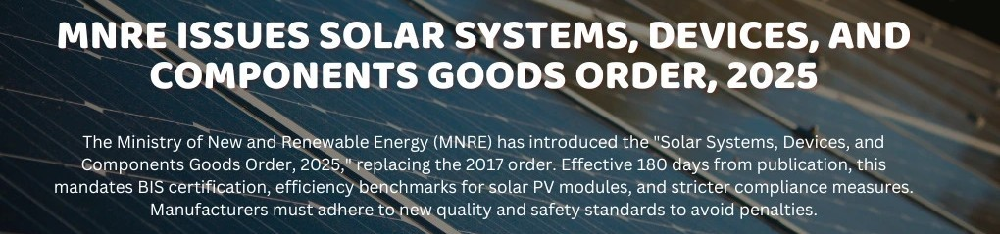
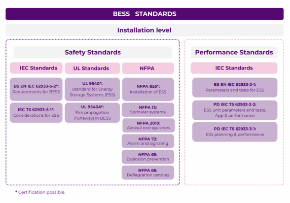
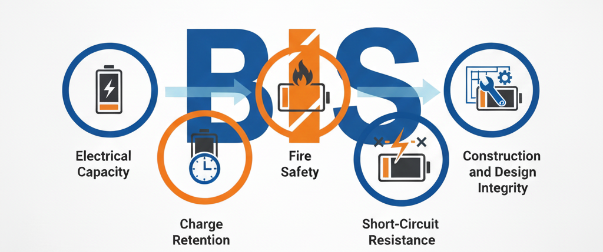
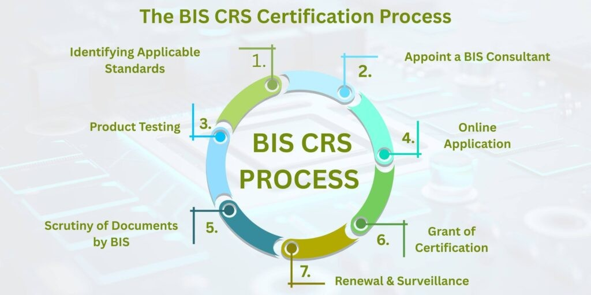
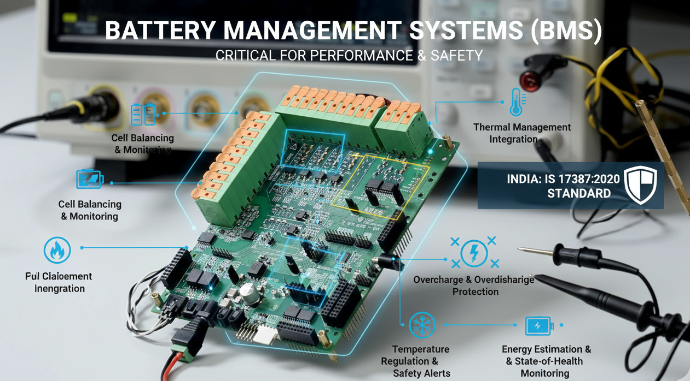
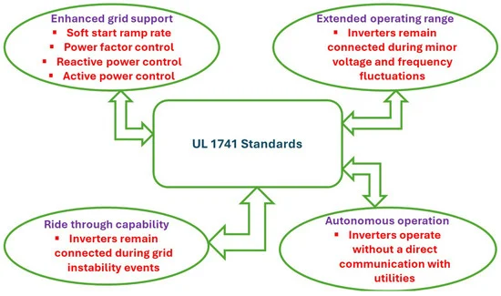
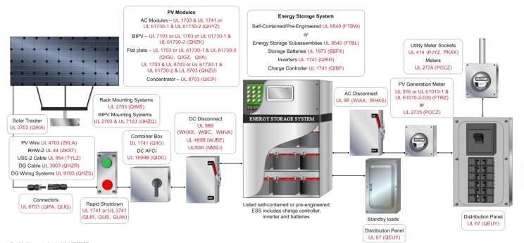
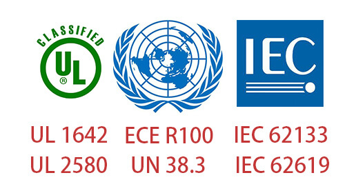
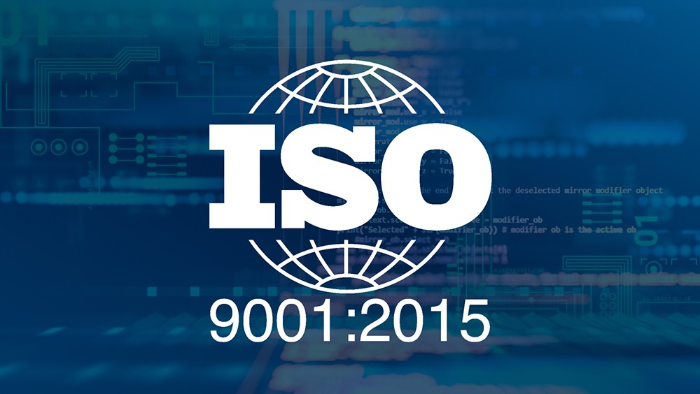
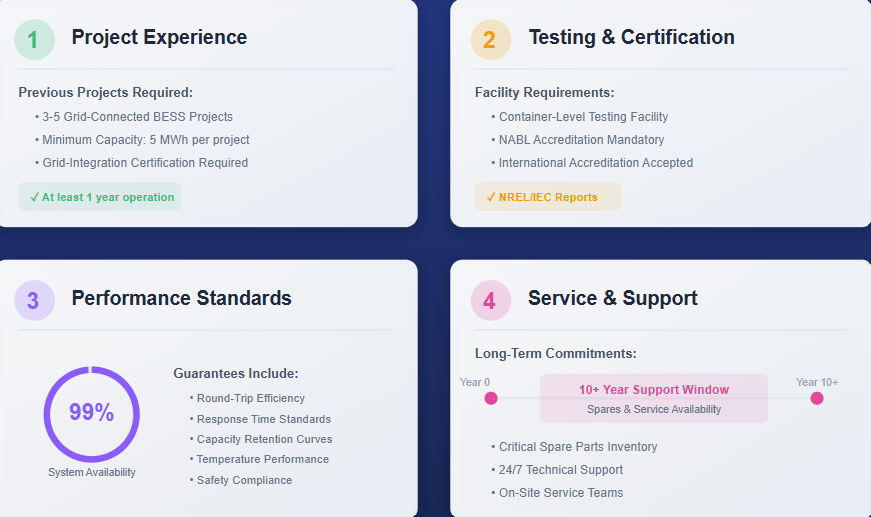

The battery energy storage systems (BESS) market in India is experiencing rapid growth, driven by the country's ambitious renewable energy targets and the mandate to integrate 500 GW of renewable capacity by 2030. However, this expansion requires strict adherence to multiple certification and regulatory frameworks that ensure safety, performance, and grid compatibility. Understanding the complex landscape of required certifications is essential for manufacturers, importers, and project developers.
BIS Certification: The Mandatory Foundation
The Bureau of Indian Standards (BIS) mandates certification for all battery storage systems sold or imported in India, making BIS compliance the cornerstone of market entry. This requirement is enforced under the Compulsory Registration Scheme (CRS) and applies to all battery chemistries used in stationary applications.
Relevant BIS Standards
- IS 16270:2023 – Secondary Cells and Batteries for Solar Photovoltaic Applications is the primary standard for storage batteries used in solar applications. This standard covers lead-acid, VRLA (valve-regulated lead-acid), lithium-ion, and other battery chemistries. The regulation was recently updated from IS 16270:2014 and is now enforced under the Solar Systems, Devices and Components Goods Order, 2025, published by the Ministry of New and Renewable Energy (MNRE).

- IS 16046 (Part 1 and Part 2) – Standards for lithium-ion batteries that align with international standards IEC 62133-1 and IEC 62133-2. This standard includes rigorous testing for overcharge, overdischarge, short circuits, thermal abuse, vibration, mechanical shock, and temperature cycling.
- IS 17092:2019 – Electrical Energy Storage Systems (EES) safety requirements specifically designed for grid-connected storage systems. This standard outline comprehensive safety measures including design safety, installation guidelines, operational safety, and compliance testing.
- IS 17387:2020 – General Safety and Performance Requirements for Battery Management Systems (BMS), the electronic systems that monitor and control battery packs during operation.
- IS 17855 – Safety requirements for lithium-ion cells and batteries for stationary applications, representing India's alignment with global best practices in battery safety.
- IS 16893 (Parts 1-4) – Electrical energy storage systems covering general requirements, planning and installation, safety, and testing procedures.

Testing Requirements Under IS 16270:2023
BIS certification requires batteries to be tested for:
- Electrical capacity
- Charge retention
- Fire safety
- Short-circuit resistance
- Construction and design integrity

The updated standard addresses India-specific challenges, including performance in hot, dusty, and humid conditions across diverse geographies like Rajasthan's deep solar discharges and remote areas like Assam.
BIS Certification Process
The certification process typically involves five key steps:
Step 1: Product Testing – Battery samples must be tested at a BIS-recognized laboratory in India. Testing timelines vary but generally take 6-12 weeks depending on the queue and documentation readiness.
Step 2: Documentation Submission – Applicants must prepare technical specifications, manufacturing details, and quality assurance procedures. Required documents include:
- Factory Registration Certificate
- Manufacturing layout and QA procedures
- ISO 9001:2015 quality management certification (recommended)
- Technical specification sheets
- Sample product labels and markings
- Test results from BIS-approved laboratories
- Declaration of conformity
Step 3: Online Application – Submit the complete application via the BIS Smart Registration portal with all supporting documents and test reports.
Step 4: BIS Review – Officials verify the application, documentation, and test results.
Step 5: Certification Grant – Upon approval, BIS issues a unique CRS number and certification for the product.
Validity and Renewal – BIS certificates remain valid for two years and must be renewed before expiration. Manufacturers must maintain labeling compliance and traceability records throughout the certification period.

Who Must Apply?
BIS certification is mandatory for:
- Indian manufacturers with registered facilities
- Foreign manufacturers (through an Authorized Indian Representative or AIR)
- Importers supplying batteries to the Indian market
Foreign companies must appoint an AIR to handle the BIS application process, as foreign applicants cannot directly apply. The AIR serves as the local compliance anchor and legal representative during certification and all subsequent regulatory interactions.
CEA Safety Regulations and Guidelines
The Central Electricity Authority (CEA) has issued comprehensive draft safety regulations (notified in June 2025) that apply to all BESS installations in addition to BIS requirements. These regulations are set to become enforceable immediately upon publication in the Official Gazette.
CEA Key Requirements
- General Safety Considerations – Battery chargers must be specifically designed for the battery chemistry used. All BESS systems must incorporate two-fault tolerance, enabling the system to either continue safe operation or shutdown securely even after two independent simultaneous faults (such as overcharge, over-discharge, short circuits, or operation outside temperature ranges).
- Ventilation and Cooling – Adequate ventilation and cooling systems are mandatory to prevent overheating and limit concentrations of flammable materials. Mechanical ventilation systems must include automatic shutdown capability upon failure.
- Hazard Detection and Suppression – BESS installations must be equipped with actively monitored systems for detecting smoke, gas, heat, and flame. Battery containers rated at 200 kWh or above must have water-based automatic fire suppression systems.

- Container-Level Safety – Specifications include 7.5-metre clearances between BESS enclosures and exterior walls or roof overhangs, explosion-proof design at container level, and emergency lighting and signage.
- Large-Scale Fire Testing (LSFT) – Mandated for certain installations to validate fire propagation behavior and safe operation under extreme conditions. This aligns with international standards like NFPA 855.
- Third-Party Fire Safety Audits – All BESS installations must undergo independent third-party fire safety audits with reports submitted to Fire Inspectors. The CEA will issue Standard Operating Procedures (SOPs) within three months of notification, and the Directorate General of Fire Safety (DGFS) will issue training guidelines within the same timeframe.
- Security and Emergency Systems – Provisions include fencing, CCTV surveillance, motion sensors, alarms, electrolyte spill containment, emergency lighting, signage, and robust emergency shutdown technology.
Standards for Specific System Components
Battery Management Systems (BMS)
Battery Management Systems are critical components that monitor and control battery performance. India's IS 17387:2020 standard governs BMS safety and performance. Key functions include:
- Cell balancing and monitoring
- Thermal management integration
- Overcharge and overdischarge protection
- Temperature regulation and safety alerts
- Energy estimation and state-of-health monitoring

While BMS certification under IS 17387 is mandatory, manufacturers should also reference international standards like IEC 62933-2-1 for comprehensive system-level integration guidance.
Power Conversion Systems (PCS) and Inverters
Power conversion systems that manage AC/DC conversion must comply with UL 1741 (for Inverters, Converters, and Controllers for Distributed Energy Resources) for grid integration aspects, although India-specific testing and certification through BIS is primary.

Thermal Management Systems
While not a standalone certification requirement in India's current framework, thermal management and cooling systems are mandatory design elements verified during BIS testing and CEA inspections. These systems are essential for preventing thermal runaway and ensuring safe operation.
International Standards with Applicability in India
Although BIS certification is the primary requirement for the Indian market, several international standards are referenced by Indian regulators and project developers for best practices:
IEC 62933 Series – International standards for electrical energy storage systems that define performance metrics, interoperability, and safety benchmarks. These are often referenced in Indian tenders and used for due diligence by financiers.
UL 9540 and UL 9540A – While not mandatory in India, these American standards for energy storage system installation and thermal runaway fire propagation testing are increasingly recognized as best practices. UL 9540A testing evaluates thermal runaway fire propagation behavior and is referenced in the CEA draft regulations for large-scale fire testing scenarios.

NFPA 855 – The US National Fire Protection Association standard for stationary energy storage system installation. Though not directly applicable in India, it serves as a reference for fire safety design and is noted in CEA guidelines as representing global best practices that India may eventually adopt more formally.
IEC 62619 and IEC 63056 – Standards for industrial lithium-ion cells ensuring safety and performance compliance at the cell level.
UN 38.3 – Transport compliance standard for lithium batteries, required when shipping battery components internationally.
RoHS and REACH – Environmental and chemical safety standards applicable to battery components and materials, particularly important for exported systems.

Containerized BESS Systems
A significant issue in India's BESS market is the lack of clear mandatory certification requirements for imported containerized utility-scale BESS solutions. Currently, containerized systems (which integrate battery packs, BMS, thermal management, and power electronics into ready-to-deploy units) are imported without mandatory BIS certification, creating a regulatory gap.
The CEA regulations address this by requiring compliance with IS 17092:2019 and container-level safety specifications, including explosion-proof design and fire suppression systems. However, standardized certification pathways for complete containerized systems are still evolving. The CEA has recommended the establishment of a national testing and certification laboratory to ensure compliance of domestically manufactured and imported containerized BESS systems.

Emerging Certifications and Future Requirements
Quality Management System Certification
While not explicitly mandated by BIS CRS, most BESS manufacturers obtain ISO 9001:2015 quality management certification to demonstrate manufacturing excellence and secure tenders. This certification is increasingly expected by project developers and financiers.

Third-Party Factory Audits
Factory qualification audits by accredited third-party auditors have become standard practice, especially for imported equipment. These audits assess manufacturing processes, quality control, and compliance with ISO 17020 standards. Leading financiers and insurance companies now accept comprehensive audit reports for due diligence.
Government Tender and Project Requirements
Utility-scale BESS tenders issued by entities like SECI (Solar Energy Corporation of India), NTPC, and state utilities impose additional qualification requirements beyond basic BIS certification:
Pre-Qualification Requirements typically mandate:
- Previous experience with 3-5 grid-connected BESS projects of 5 MWh or higher capacity
- At least one year of successful operational history for the largest capacity installation
- Availability of a rated power container-level testing facility with NABL (National Accreditation Board for Testing and Calibration Laboratories) or international accreditation
- NREL/IEC Type Test Reports demonstrating component performance
- Comprehensive performance guarantees (typically 99% system availability)
- Spares and service availability commitments for 10+ years post-supply

Market Access and Timeline Considerations
Obtaining BIS certification typically requires 2-3 months for straightforward applications with complete documentation and successful testing on the first attempt. However, the entire process from initial application to approved CRS number can extend to 6-12 weeks depending on test lab queues and any required remedial testing.
Foreign manufacturers targeting the Indian market should budget additional time for AIR appointment, documentation translation, and coordination with Indian representatives. The CEA has recommended incentives for domestic component manufacturing, which may accelerate development of locally certified BMS, thermal management systems, and containerized solutions in coming years.
Conclusion
Certification requirements for BESS in India form a multi-layered compliance framework designed to ensure safety, reliability, and grid compatibility. BIS certification under IS 16270:2023 (for solar batteries) and IS 17092:2019 (for general stationary BESS) is mandatory for all market entry, while CEA safety regulations establish operational and installation standards. Manufacturers and project developers must also navigate component-level certifications (particularly for BMS under IS 17387:2020) and increasingly stringent third-party verification requirements.
For utility-scale projects, additional pre-qualification requirements, performance guarantees, and international best practice compliance (referenced standards like IEC 62933 and NFPA 855) effectively become certification prerequisites through tender specifications. As India's energy storage capacity target of 48 GW (236 GWh) by 2031-32 materializes, ongoing regulatory harmonization and the establishment of national testing laboratories will further strengthen the certification ecosystem while accelerating time-to-market for compliant solutions.